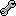

Image: Sensor Setup Example
The Sensor Setup shows a sensor display for each Glovebox sensor. The Glovebox sends the data for 24 channels. In most cases not every channel is used. The quantity of the used channels depends on the connected devices (e.g. datagloves, data foodsoles).
With the JGlove software you are able to configure the setup for your individuel needs and equipment.
By clicking the checkbox button you are able to activate and deactivate each sensor. An activated senor will be visible in the monitor and the graphical monitor.
Also the type of the sensor, the name and the current value of the sensor will be shown in the display.
By clicking the calibrate button (  ) you can modify names and types of the sensors, add filters and calibrate them.
With this option you can choose, create and remove sensor selection presets.
If you made a new selection, you can choose the option "New Preset...", enter a
name and store the selection.
If you want to delete a selection, first choose the selection and click the option
"Remove preset..."
By clicking on the icon itself instead of the arrow at its side, you can go
through the available presets.
With this option can choose, create and remove sensor presets.
If you have configured the sensors (name, types, selection), you can choose
the option "New Preset...", enter a name and store the preset.
If you want to delete a preset, first choose the preset and click the option "Remove preset..."
By clicking on the icon itself instead of the arrow at its side, you can go
through the available presets.
You are able to switch between the modes by clicking the option. It`s possible to select 3 different display modes for the sensor view.
Click this option to calibrate the selection. For details check the Calibration chapter.
Click this option to create a new gesture.